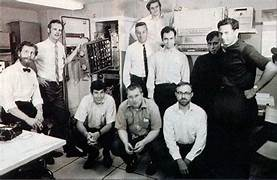
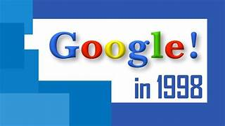
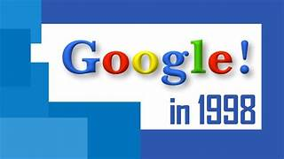
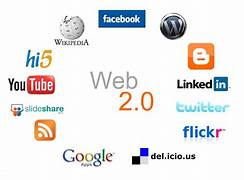
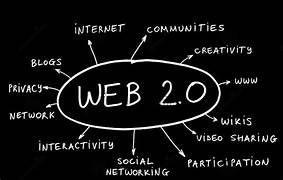
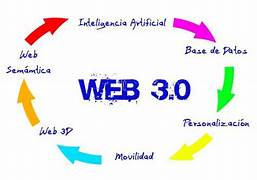
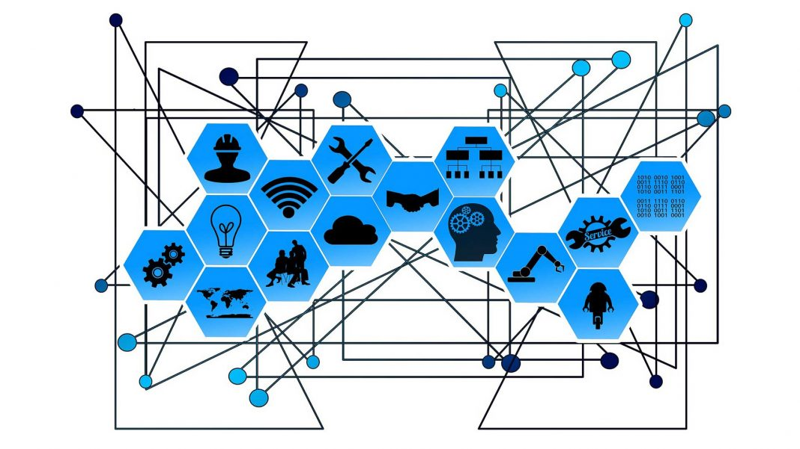

| Hitos |
Hechos |
Imágenes |
Referencias |
| Internet |
1961 Leonard Kleinrock publicó desde el MIT el primer documento sobre la teoría de conmutación de paquetes
1969 se estableció la primera conexión de computadoras, conocida como ARPANET, entre tres universidades en California y una en Utah, Estados Unidos.
1983 ARPANET cambió el protocolo NCP por TCP/IP.
1990 ARPANET se desmantela y aparecen MILNET y INTERNET |
 |
| Web 1.0 |
1991 Tim Berners Lee, crea la Word Wide Web mas conocida como WWW.
En enero de 1993, Marc Andreessen y su equipo en el Centro Nacional para Aplicaciones Supercomputadoras (NCSA) lanzaron Mosaic, el primer navegador web gráfico ampliamente utilizado.
Google se convirtió en uno de los motores de búsqueda más populares y poderosos de la Web 1.0, revolucionando la forma en que se accedía y se encontraba información en línea. |
   |
| Web 2.0 |
El término "Web 2.0" fue acuñado por primera vez por Dale Dougherty y Craig Cline en una conferencia organizada por O'Reilly Media en octubre de 2004.
YouTube fue lanzado oficialmente el 14 de febrero de 2005 por Steve Chen, Chad Hurley y Jawed Karim. Permitió a los usuarios cargar, compartir y ver videos en línea de forma gratuita, democratizando el acceso al contenido de video y transformando la forma en que se consumían los medios en línea.
La Web 2.0 también vio la adopción generalizada de tecnologías como blogs, wikis, redes sociales, y aplicaciones web colaborativas, lo que transformó radicalmente la forma en que interactuamos en línea y accedemos a la información. |
  |
| Web 3.0 |
En 2004, Tim Berners-Lee, el creador de la World Wide Web, acuñó el término "Web Semántica" para describir su visión de una web en la que el contenido estaría vinculado de manera semántica, permitiendo a las máquinas entender y responder a las solicitudes de los usuarios de manera más inteligente.
La Blockchain se considera como una tecnología fundamental para la Web 3.0 debido a su capacidad para garantizar la seguridad, la transparencia y la descentralización.
En los últimos años, hemos visto un rápido desarrollo de los metaversos y las tecnologías de realidades extendidas, que incluyen la realidad virtual, la realidad aumentada. Estas tecnologías están dando forma a la Web 3.0 al crear espacios virtuales tridimensionales donde los usuarios pueden interactuar, colaborar y consumir contenido de nuevas formas inmersivas. |
 |
| Web 4.0 |
Avances en la Inteligencia Artificial y el Aprendizaje Automático
La Web 4.0 se caracteriza por su capacidad para conectarse con otros dispositivos y tecnologías, como el Internet de las cosas (IoT) y la realidad virtual (RV) y aumentada (RA). Esto abre un amplio abanico de posibilidades para el desarrollo de aplicaciones web más inmersivas y conectadas.
Aunque todavía se encuentra en sus etapas iniciales de desarrollo, la computación cuántica promete un cambio revolucionario en la capacidad de procesamiento y la resolución de problemas complejos. |
 |